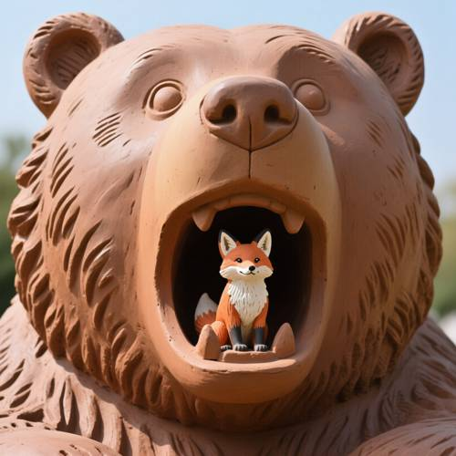
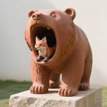
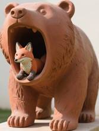

Relationship — There is a huge clay bear sculpture with an even smaller fox sculpture
There is a huge clay bear sculpture with an even smaller fox sculpture in its open mouth. The fox is just enough to come out of the bear's mouth.

Direct — one call, no iterationContinuum — Qwen3.8-27B + Qwen-Image
Judge — Direct
PASSRelationship - Inclusion — The image features a large bear sculpture with a wide-open mouth. Positioned inside the mouth, on the lower jaw, is a smaller fox sculpture.
FAILLogical Reasoning — The fox sculpture is positioned within the bear's open mouth. However, the fox is considerably smaller than the opening of the mouth, with a significant amount of empty space surrounding it. This contradicts the description that the fox is 'just enough to come out of the bear's mouth,' which implies a much tighter fit.
PASSAttribute - Size — The image shows a large bear sculpture and a visibly smaller fox sculpture. The size of the fox is diminutive in comparison to the bear's head, fulfilling the requirement for a 'huge' bear and an 'even smaller' fox.
Judge — Continuum
PASSRelationship - Inclusion — The image shows a sculpture of a bear with its mouth wide open. Positioned inside the bear's mouth is a sculpture of a fox.
PASSLogical Reasoning — The fox sculpture is placed at the lower edge of the bear's open mouth, with its head and front paws protruding while the rest of its body is inside the mouth's cavity. This visual arrangement accurately represents the idea of the fox being 'just enough to come out'.
PASSAttribute - Size — The bear sculpture is large, standing on a stone plinth, which suggests it is 'huge'. In contrast, the fox sculpture is significantly smaller, fitting comfortably within the bear's mouth, thus being 'even smaller'.
What the agent did
Thinking
The user wants an image: a giant clay bear sculpture with a small fox sculpture inside its open mouth, with the fox's body just barely protruding from the bear's mouth. Let me generate this using qwen-image. Let me carefully craft the prompt: a huge clay bear sculpture (brown, unglazed terracotta texture, with a sculptural feel), mouth open wide, and a small fox sculpture (smaller, also clay or contrasting material) inside the open mouth, with the fox positioned as if about to be pulled out of the mouth — head/front half sticking out, body inside. Visual details: the fox is "just barely protruding" — the fox's head and front legs stick out from the bear's mouth, the rear is inside. Both are clay sculptures, probably on a pedestal or the ground, with a neutral background (studio or outdoor sculpture garden). Let me write the prompt: "A giant unglazed clay bear sculpture standing on a stone pedestal in a sculpture garden, the bear's mouth open wide, and inside the open mouth a much smaller clay fox sculpture wedged in, the fox's head and front paws sticking out from the bear's mouth while its body remains inside, terracotta and reddish-brown clay texture, soft natural daylight, clean neutral background" Dimensions: the harness controls size, so use defaults (1024x1024). Then inspect, mark the best, and edit if necessary.
Step 1 — `generate_image`
{
"model": "qwen-image",
"prompt": "A huge unglazed clay bear sculpture standing on a low stone plinth in a minimalist sculpture garden. The bear's mouth is open wide, and inside the open mouth a much smaller clay fox sculpture is wedged, its head and front paws poking just out of the bear's mouth while its body stays inside, as if the fox is being spit out. Rough terracotta and reddish-brown clay textures with visible sculpting marks, soft natural daylight, shallow depth of field, neutral pale background."
}
Result img_0

Thinking
The generated image looks pretty good. A giant clay bear sculpture with its mouth open, and a smaller fox sculpture is inside the mouth, with the fox's head and front paws just barely sticking out. The prompt is "the fox is only barely coming out of the bear's mouth," and this matches — the fox's head and front legs are protruding from the mouth, while the body is inside. Let me inspect the details. The fox appears to be a bit cartoonish (white face markings, cute face), but as a clay sculpture it's not a problem. The bear is a clay sculpture, mouth open, and the fox is inside the mouth. Points to verify: 1. Bear sculpture — clay, giant ✓ 2. Fox sculpture — smaller, inside the open mouth ✓ 3. Fox just barely coming out of the mouth ✓ — head and front paws are out, body is inside. To check the quality, I'll inspect the region of the fox's mouth in detail. Let me take a look at the mouth region.
Model
The first generation looks very close to the description. Let me zoom in to check the fox and mouth region for quality issues.
Step 2 — `inspect_region`
{
"image": "img_0",
"roi": [
"the open bear mouth and fox sculpture"
]
}
Thinking
The roi needs to be a string, not a list. Let me try again with a string.
Step 3 — `inspect_region`
{
"image": "img_0",
"roi": "the open bear mouth and fox sculpture"
}
Result img_1

Thinking
Looking at the cropped image: - Clay bear sculpture, huge, mouth open ✓ - A small fox sculpture inside the open mouth ✓ - The fox's head and front paws are just barely sticking out of the mouth, body is inside ✓ - The fox looks a bit more like painted plastic than clay (it has a smooth, painted appearance and cartoonish white markings), but as a "sculpture" it's within acceptable range. The user said "fox sculpture," and this reads as a small figurine placed in the bear's mouth. It's not perfect in terms of clay texture, but it's fine. Everything the prompt asked for is present and correct. The composition matches: huge clay bear, smaller fox inside the open mouth, the fox just barely sticking out. The main point to check: "The fox is just barely sticking out of the bear's mouth." In the image, the fox's head and front legs are outside the mouth, and the body is inside. Good. This is a good result. Mark it as best and finish. The image is clean, and there are no text rendering requirements. I'll mark img_0 as the best.
Model
In the zoomed-in view, I was able to confirm that the image matches the description well: a giant unglazed clay bear with its mouth wide open, and a much smaller fox figurine nestled inside the mouth — only the fox's head and front paws are sticking out from the mouth, and its body is inside. The sculptural clay texture, the stone pedestal, and the bright background are all rendering cleanly, and there are no artifacts. This meets all the elements of the prompt, so I'll mark this as the final result.
Step 4 — `mark_best`
{
"image": "img_0",
"reason": "Huge clay bear sculpture with mouth open wide and a smaller fox sculpture wedged in the mouth, fox's head and front paws just poking out \u2014 matches all prompt elements with clean rendering."
}
Thinking
The image is marked as the best. The task is complete. Let me give the user a brief summary.
Model
Done. The image shows a huge unglazed clay bear sculpture on a stone plinth, mouth open wide, with an even smaller fox sculpture wedged in its mouth — just enough of the fox (its head, chest, and front paws) comes out of the mouth while its body stays inside, as if the bear is spitting it out. The marked best result is `img_0`.